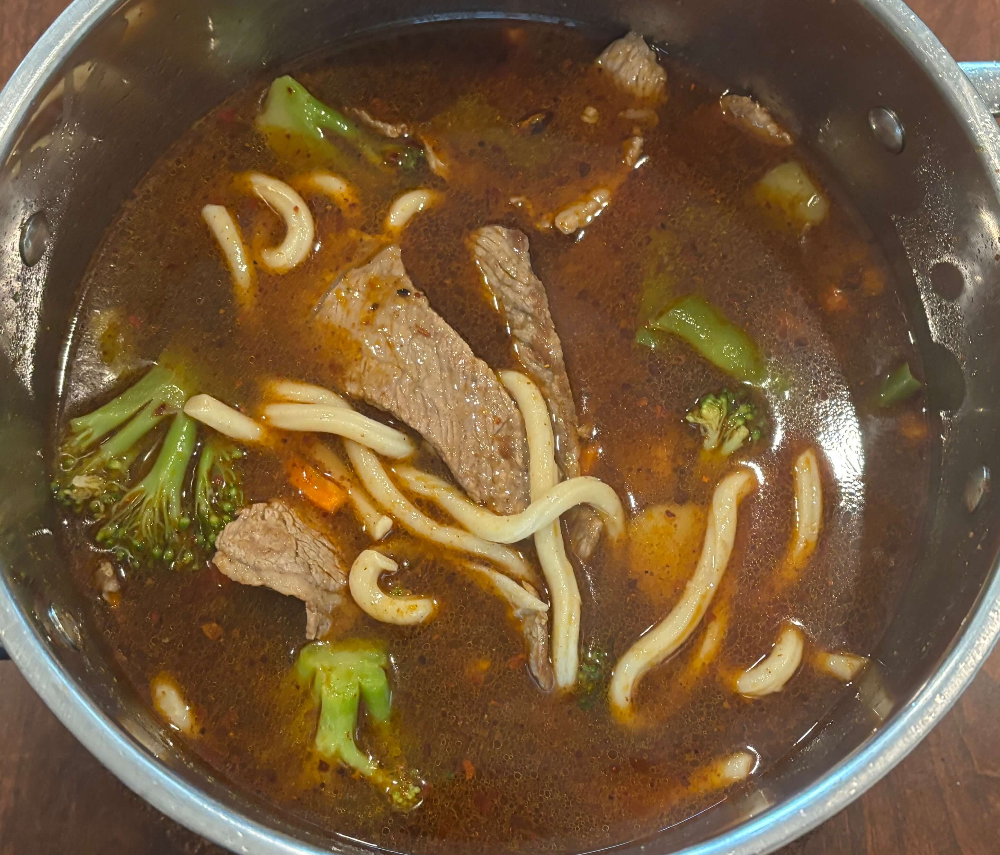

Home
Beef and Udon Noodle Soup

5 servings
Prep: 5 min, Cook: 15 min
Ingredients
- 32 oz Beef broth
- 7 oz udon noodles
- Frozen stir fry vegies
- Beef shaved or sizzle steak
- Cooking oil
- Soy sauce
- Oyster sauce
- Chili crisp oil
Steps
- Add 1 part broth, 1 part water to stockpot. Stir in soy sauce and oyster sauce, bring to boil on HIGH.
- Add noodles; cook, stirring occasionally, 4 min.
- Add vegetables; stir to combine. Return to simmer. Reduce heat to MED-HIGH.
- Add beef; stir to combine. Return to simmer. Cook 2 min until beef is cooked through.
- Stir in chili crisp oil; cook, stirring, until heated through.
Tip
- For more tender jucier steak, pan sear it before adding to pot.